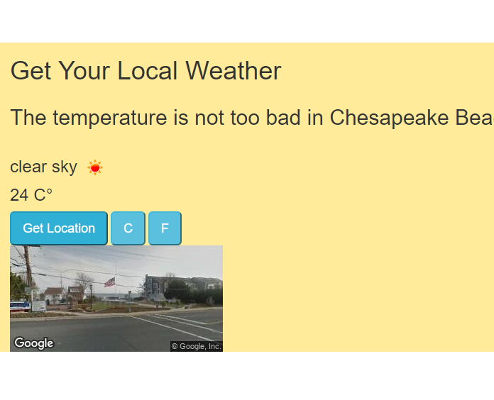
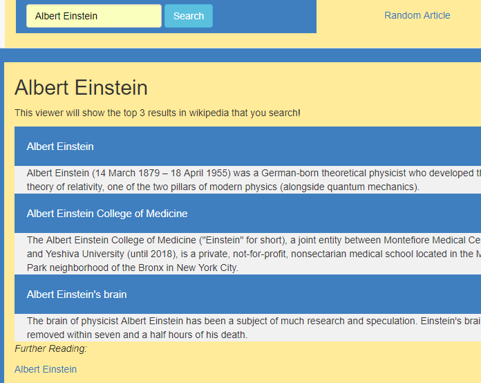
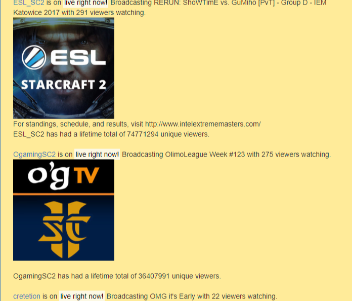

Get Your Local Weather
Get Your Local Weather uses HTML5 geolocation, streetviewAPI, and freeCodeCamp weather API to display local weather.

Microbay Wiki View
Wiki view interacts with wikipedias api to deliver the most relevant results of a search query. It provides a brief synopsis and suggestions for further reading.

Microbay Twitch TV View
Twitch TV View uses the Twitch TV api to gather up to date relevant info about several twitch channels. It checks if the channels are live and uses javascript and ajax to build out the majority of the page.
